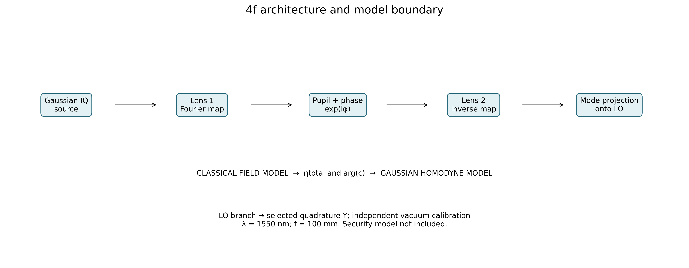
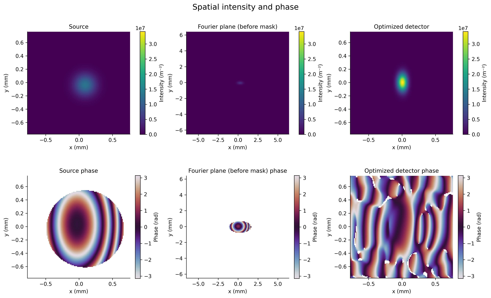
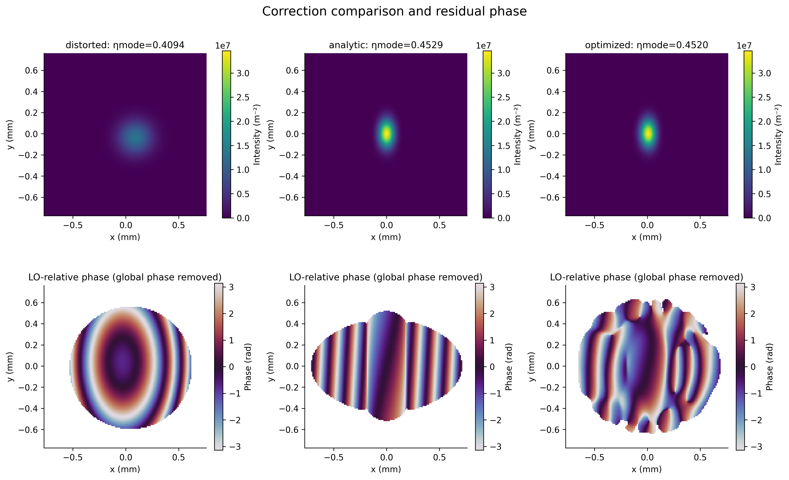
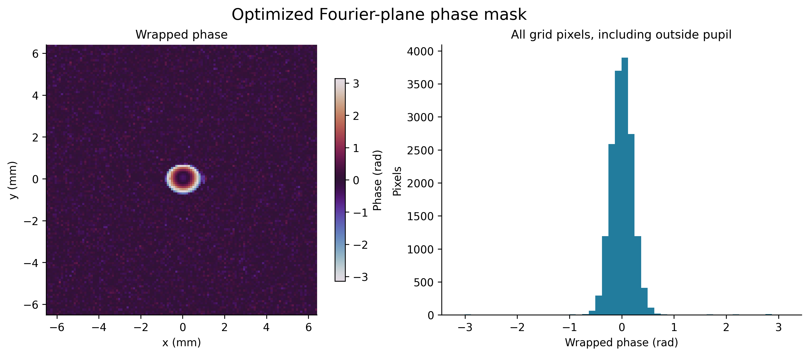
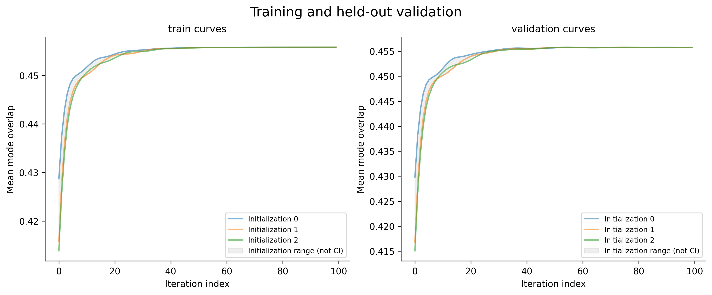
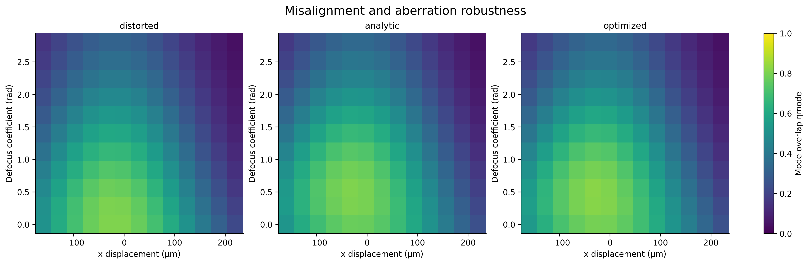
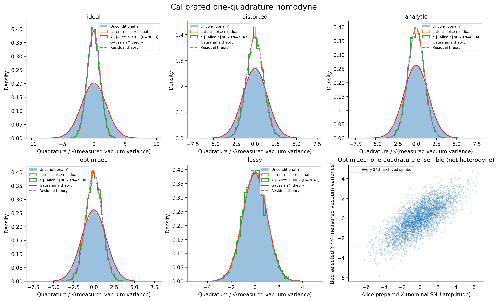
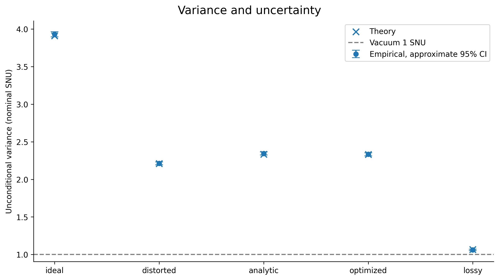
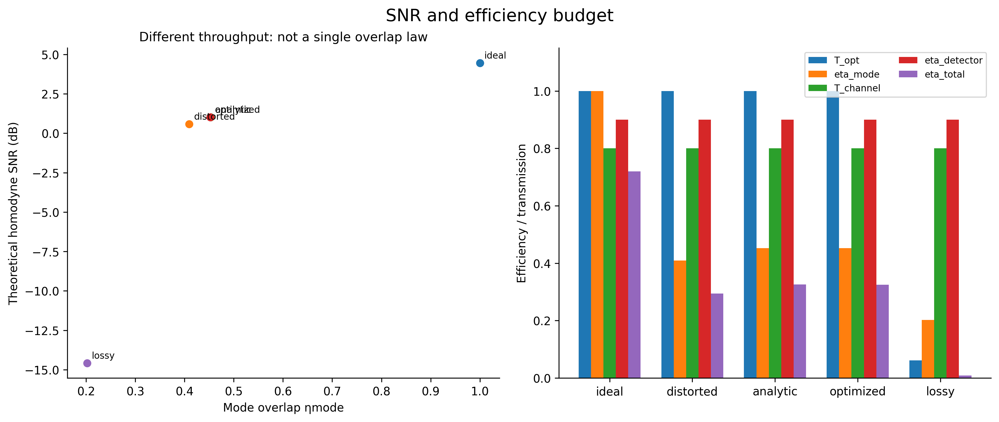
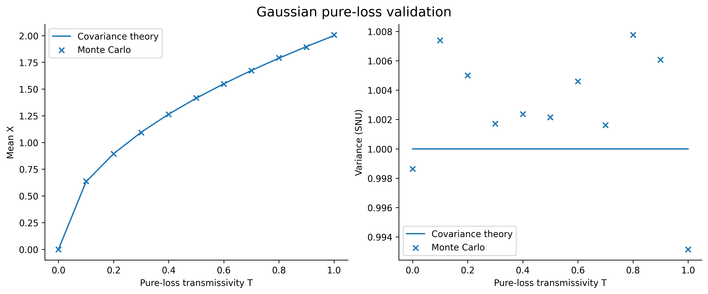

Fourier-domain coherent communication report
Simulation only. Secret key rate not calculated. No measured or fabricated device is claimed. Phase-only correction cannot recover lost photons, squeeze vacuum, or establish quantum security.
Reproducibility: config.json, metrics.json, manifest.json, arrays/data.npz, tables/cases.csv.
Baseline comparison and SNR interpretation
SNR disclosure: snr_empirical in archived metrics is Var(latent signal)/Var(latent noise), an oracle/component sampler diagnostic, not an inferred receiver SNR. CSV labels this snr_latent_component_diagnostic. Figure 9 shows theory only.
Optimized minus distorted: paired mean Δηmode=0.039000549, SE=0.0015461183, 95% Student-t CI=[0.03580216, 0.042198939], N=24. Positive improvement supported on this test distribution. Assumes independent paired test realizations; no multiple-comparison correction.
Optimized minus analytic: paired mean Δηmode=0.00026760173, SE=0.00079243936, 95% Student-t CI=[-0.001371684, 0.0019068874], N=24. No demonstrated improvement over this baseline (95% paired interval is not wholly positive). Assumes independent paired test realizations; no multiple-comparison correction.
1. 4f architecture and model boundary

- Scientific question: Where does the classical model end?
- Variables and units: Position in mm, wavelength in nm; ηtotal dimensionless.
- Independent / controlled variables: Configured grid, focal length, channel and detector efficiencies.
- Observed result: Configured λ=1550 nm; grid N=128; optimized ηtotal=0.325457.
- Physical mechanism: A sampled Fourier transform, pupil and phase mask determine projection onto the LO; Gaussian sampling follows.
- Possible falsification: Failure of power/overlap tests would invalidate the optical-to-statistical interface.
- Limitations / artifacts: Diagram is an operator schematic, not a finite-distance lens-by-lens experimental validation.
- CGH / TFLN implications: Bulk lenses expose a Fourier plane; an integrated slab/star coupler requires independent design.
2. Spatial intensity and phase

- Scientific question: How are intensity and phase redistributed?
- Variables and units: Intensity in m⁻², coordinates mm, wrapped phase rad.
- Independent / controlled variables: Same source and optimized mask; Fourier coordinates use a different physical pitch.
- Observed result: Source power=1; optimized output power=1.
- Physical mechanism: FFT scaling dx/dxF preserves integrated power between physical planes.
- Possible falsification: A mismatch between integrated powers beyond pupil loss would falsify normalization.
- Limitations / artifacts: Common linear intensity scale may hide weak Fourier detail; phase below 10⁻⁶ peak intensity is masked.
- CGH / TFLN implications: CGH aperture and detector area must be specified in physical coordinates.
3. Correction comparison and residual phase

- Scientific question: Does phase correction improve mode matching?
- Variables and units: Intensity m⁻²; LO-relative residual phase rad; overlap dimensionless.
- Independent / controlled variables: Same representative distorted input, pupil and LO; correction method changes.
- Observed result: ideal: ηmode=1.00000, Topt=1.00000; distorted: ηmode=0.40941, Topt=1.00000; analytic: ηmode=0.45290, Topt=1.00000; optimized: ηmode=0.45202, Topt=1.00000; lossy: ηmode=0.20200, Topt=0.06174
- Physical mechanism: A Fourier phase can align spectral phase but cannot match arbitrary spectral amplitudes.
- Possible falsification: Independent test realizations can show no improvement or worse generalization.
- Limitations / artifacts: Representative maps are not population averages; global overlap phase is removed only for residual visualization.
- CGH / TFLN implications: Residual phase and amplitude both matter; a phase-depth calibration alone cannot guarantee coupling.
4. Optimized Fourier-plane phase mask

- Scientific question: What phase pattern was selected?
- Variables and units: Fourier coordinates mm; wrapped phase rad; histogram pixel counts.
- Independent / controlled variables: Validation-selected continuous phase; fixed sampling and pupil.
- Observed result: Wrapped phase range [-3.13482, 3.12529] rad; Fourier pitch=100.911 µm.
- Physical mechanism: Unit-modulus modulation changes phase, not local Fourier intensity.
- Possible falsification: Quantization or measured phase errors can reduce held-out overlap.
- Limitations / artifacts: Histogram includes unilluminated pixels; no lithographic feature or quantization constraint was optimized.
- CGH / TFLN implications: No dimensioned etch height is exported without material indices and process calibration.
5. Training and held-out validation

- Scientific question: Does optimization generalize beyond training?
- Variables and units: Iteration index; mean normalized overlap.
- Independent / controlled variables: Independent train/validation seeds; multiple initialization seeds; fixed optimizer settings.
- Observed result: Selected initialization=2, iteration=54, validation overlap=0.455778; independent optimized test mean=0.470226.
- Physical mechanism: Autograd adjusts phase using training gradients; validation chooses the checkpoint.
- Possible falsification: Poor independent test overlap would contradict robust generalization.
- Limitations / artifacts: Initialization envelopes are ranges, not statistical confidence intervals; validation selection can overfit.
- CGH / TFLN implications: Training should include measured alignment and fabrication errors before manufacturing.
6. Misalignment and aberration robustness

- Scientific question: How sensitive is overlap to displacement and defocus?
- Variables and units: Displacement µm, defocus coefficient rad, overlap dimensionless.
- Independent / controlled variables: Only displacement x and defocus are swept; other distortions fixed; no retraining.
- Observed result: distorted: sweep min=0.04247, max=0.80529; analytic: sweep min=0.04559, max=0.80731; optimized: sweep min=0.04538, max=0.82041
- Physical mechanism: Displacement changes Fourier phase while aberration changes the complex spectrum.
- Possible falsification: A measured tolerance scan outside simulated trends would reject the distortion model.
- Limitations / artifacts: Finite deterministic grid is not an uncertainty distribution or complete tolerance budget.
- CGH / TFLN implications: Use this scan to propose alignment tests, not to certify manufacturing tolerances.
7. Calibrated one-quadrature homodyne

- Scientific question: Do calibrated homodyne ensembles follow the Gaussian model?
- Variables and units: Quadrature divided by measured vacuum standard deviation; probability density.
- Independent / controlled variables: Independent noise streams; V_A=4, receiver noise=0.02, electronics=0.01.
- Observed result: ideal: N=100000, vacuum calibration=1.00475; distorted: N=100000, vacuum calibration=1.00134; analytic: N=100000, vacuum calibration=1.01002; optimized: N=100000, vacuum calibration=1.00508; lossy: N=100000, vacuum calibration=0.996482
- Physical mechanism: Unconditional variance includes modulation; signal-subtracted residual contains shot, excess and electronic noise.
- Possible falsification: Non-Gaussian residuals or disagreement with the analytic overlay would challenge this sampler.
- Limitations / artifacts: Conditional histograms select archived symbols with |Alice X| ≤ 0.1√V_A; finite-bin width and any uncompensated P rotation remain. Residual is a separate latent-noise diagnostic. Scatter pairs prepared Alice X with one Bob quadrature across symbols, not simultaneous X/P heterodyne.
- CGH / TFLN implications: TFLN IQ encoding and balanced homodyne require independent vacuum and electronics calibration.
8. Variance and uncertainty

- Scientific question: Are empirical variances consistent with predictions?
- Variables and units: Nominal shot-noise units; approximate 95% sample-variance intervals.
- Independent / controlled variables: Same optical efficiencies and Gaussian modulation; independent ensembles per case.
- Observed result: ideal: empirical−theory=+0.018231, theory inside CI=True; distorted: empirical−theory=+0.0022151, theory inside CI=True; analytic: empirical−theory=+0.0095823, theory inside CI=True; optimized: empirical−theory=+0.0013719, theory inside CI=True; lossy: empirical−theory=-0.0042157, theory inside CI=True
- Physical mechanism: Var(Y)=ηtotal V_A+1+ξrec+vel; reduced unconditional variance alone does not imply squeezing.
- Possible falsification: Systematic disagreement beyond sampling uncertainty would indicate a model or normalization error.
- Limitations / artifacts: Normal-approximation intervals omit calibration uncertainty and multiple-comparison corrections.
- CGH / TFLN implications: Measure LO stability and shot-noise linearity before interpreting receiver variances.
9. SNR and efficiency budget

- Scientific question: How do overlap and throughput jointly control SNR?
- Variables and units: Linear efficiencies and homodyne SNR dB.
- Independent / controlled variables: Fixed channel, detector, modulation and noise; case-dependent overlap and optical throughput.
- Observed result: ideal: SNR=2.79612 (linear); distorted: SNR=1.14475 (linear); analytic: SNR=1.26636 (linear); optimized: SNR=1.26391 (linear); lossy: SNR=0.0348694 (linear)
- Physical mechanism: ηtotal=Tchannel Topt ηmode ηdetector; the factors multiply, rather than add.
- Possible falsification: A passive device increasing power above its input would violate this model.
- Limitations / artifacts: Zero SNR is rendered at the floating-point floor in dB; mutual information is classical and not a key rate.
- CGH / TFLN implications: Optimize insertion loss alongside mode matching; phase cannot restore occluded photons.
10. Gaussian pure-loss validation

- Scientific question: Does coherent-state pure loss preserve vacuum variance?
- Variables and units: Transmissivity dimensionless; quadrature mean and variance SNU.
- Independent / controlled variables: Input mean (2, −0.8), covariance identity; independent Monte Carlo samples.
- Observed result: Backend: Strawberry Fields gaussian (isolated subprocess); maximum mean error=0.00656945; maximum variance error=0.00776008.
- Physical mechanism: μout=√T μin and Vout=T Vin+(1−T)I; a coherent state retains variance 1.
- Possible falsification: A reproducible T-dependent coherent variance would falsify the pure-loss implementation.
- Limitations / artifacts: SF Gaussian engine validated vacuum and coherent pure-loss moments; empirical homodyne arrays are seeded NumPy samples. Backend identity is archived, not inferred from the rendering environment; no quantum-security simulation is claimed.
- CGH / TFLN implications: Loss characterisation is required for a TFLN transmitter; a passive CGH cannot generate squeezing or entanglement.
Independent test distribution
{
"distorted": {
"eta_mode_mean": 0.43122537919600296,
"eta_mode_std": 0.07035367669572098,
"eta_mode_sem": 0.014360884119437707,
"T_opt_mean": 0.9999999998853261,
"n": 24,
"seed": 303
},
"analytic": {
"eta_mode_mean": 0.46995832689811845,
"eta_mode_std": 0.07046627570034483,
"eta_mode_sem": 0.014383868295010515,
"T_opt_mean": 0.9999999998853261,
"n": 24,
"seed": 303
},
"optimized": {
"eta_mode_mean": 0.47022592862497076,
"eta_mode_std": 0.07211611950625305,
"eta_mode_sem": 0.014720641251657727,
"T_opt_mean": 0.9999999998853261,
"n": 24,
"seed": 303
}
}TorchOptics validation
{
"version": "0.4.0",
"integration": "Production ideal focal-plane relay uses TorchOptics Field.modulate and functional implementation FFT kernels (torch aliases), with physical spacing; independent NumPy reference; additional ASM_FRESNEL API audit",
"power_error": 0.0,
"overlap_error": 4.440892098500626e-16,
"fresnel_relative_error": 4.1217672805341716e-16,
"fresnel_distance_m": 0.001,
"fresnel_boundary": "periodic, asm_pad_factor=0"
}Gaussian backend disclosure
{
"backend": "Strawberry Fields gaussian (isolated subprocess)",
"reason": "SF Gaussian engine validated vacuum and coherent pure-loss moments; empirical homodyne arrays are seeded NumPy samples.",
"max_mean_error": 0.006569454376203154,
"max_variance_error": 0.007760076949348438,
"n_symbols": 100000,
"sf_versions": {
"python": "3.11.12",
"numpy": "1.26.4",
"scipy": "1.11.4",
"strawberryfields": "0.23.0"
},
"sf_states_checked": 22,
"sf_max_mean_error": 2.220446049250313e-16,
"sf_max_covariance_error": 0.0
}Sampling
{
"dx_m": 1.2e-05,
"dxF_m": 0.00010091145833333333,
"wavelength_m": 1.55e-06,
"focal_length_m": 0.1,
"grid_n": 128,
"fourier_mapping": "x_F=lambda*f*f_x",
"maximum_represented_paraxial_angle_rad": 0.06458333333333333,
"fourier_field_power_factor": 0.11891612903225807
}